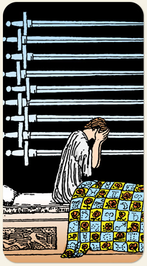

Nove de Espadas
Maturidade do pensamento, certezas, assumir responsabilidades, reflexões profundas e compenetração. Na imagem, uma colcha com símbolos astrológicos indicando que o céu sempre pode ajudar.
Positivo: Acordar cedo para organizar o dia, Deus ajuda quem cedo madruga, produzimos vibrações mais elevadas quando pensamos profundamente, sabedoria profunda, alcançar um bom pensamento.
Negativo: O que envelheceu sem maturidade, perturbação profunda, uma mente que não descansa, pensamento fixo, falta de sono, angústia aflição agonia.
Símbolos: Pessoa sentada na cama, Mãos cobrindo o rosto, Colcha com Rosas e Símbolos Astrológicos, Espadas Penduradas na Parede, Cama.
Cores: Cor, Cor, Cor, Cor.